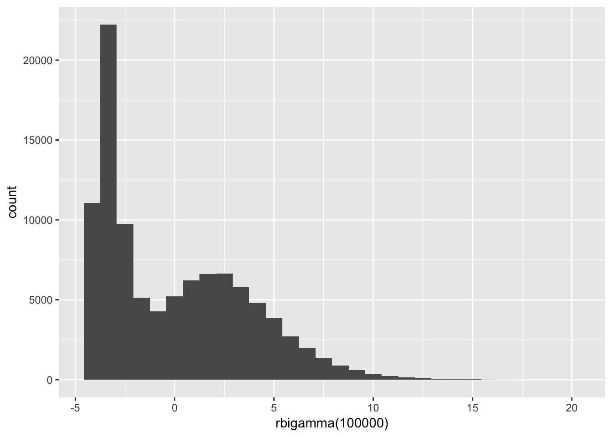
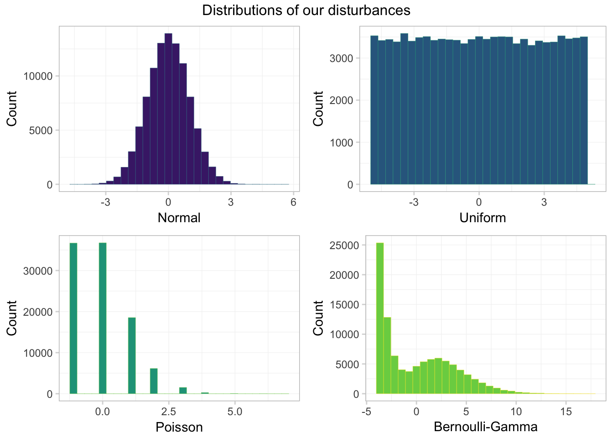
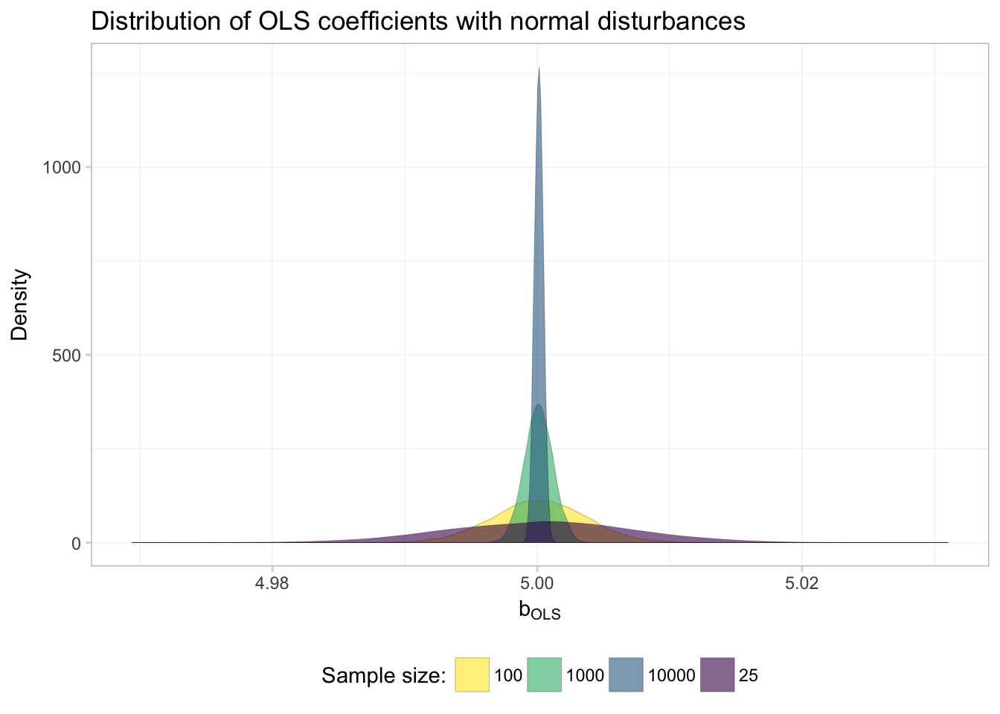
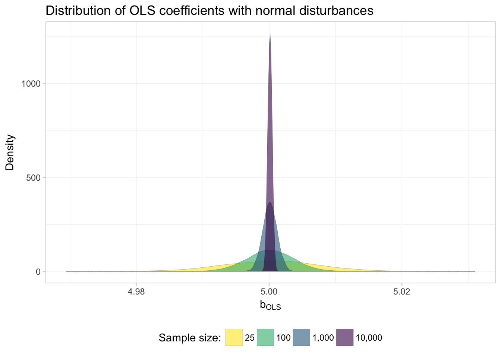
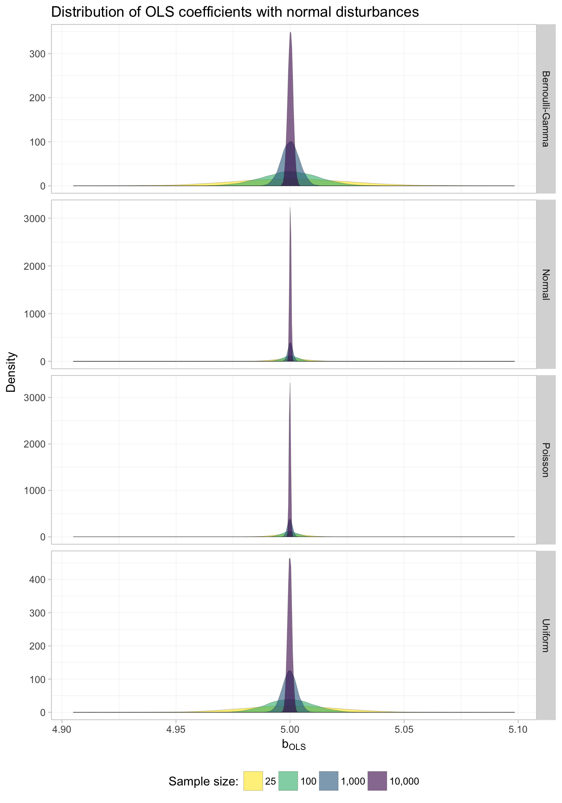
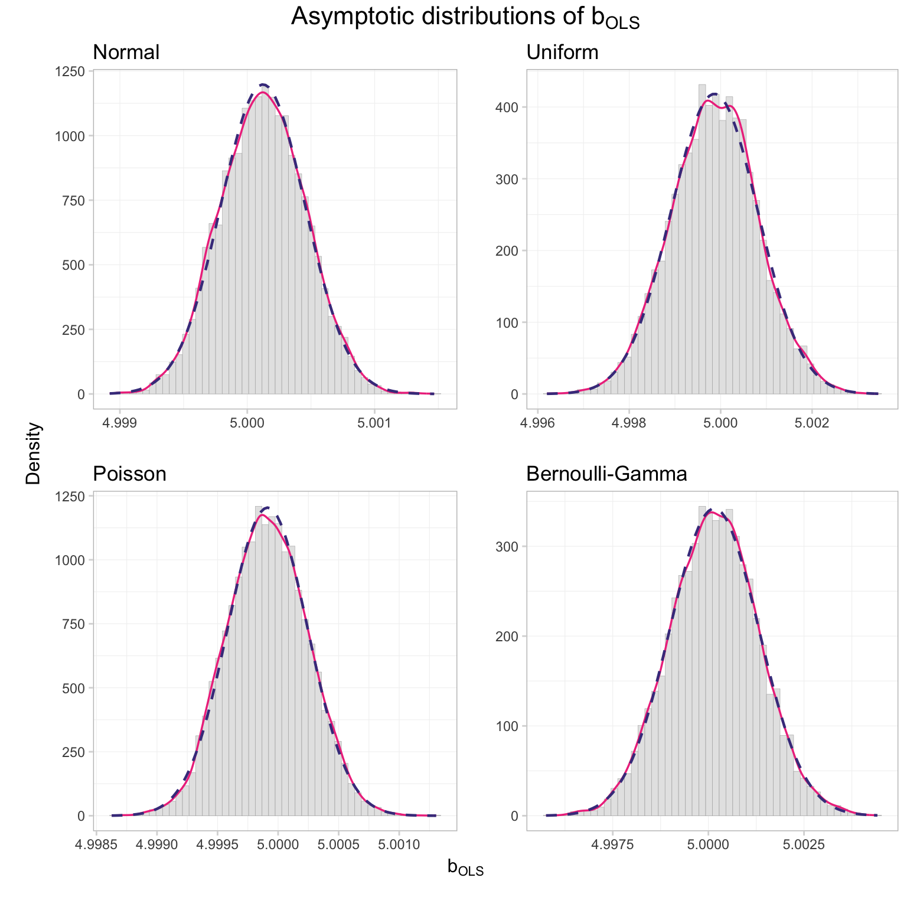
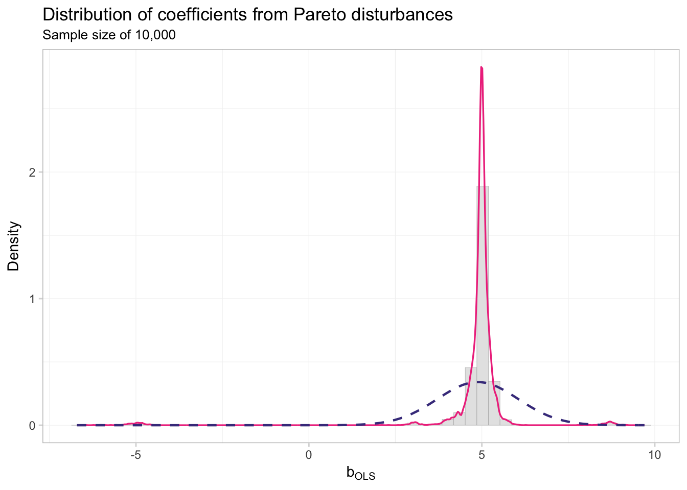
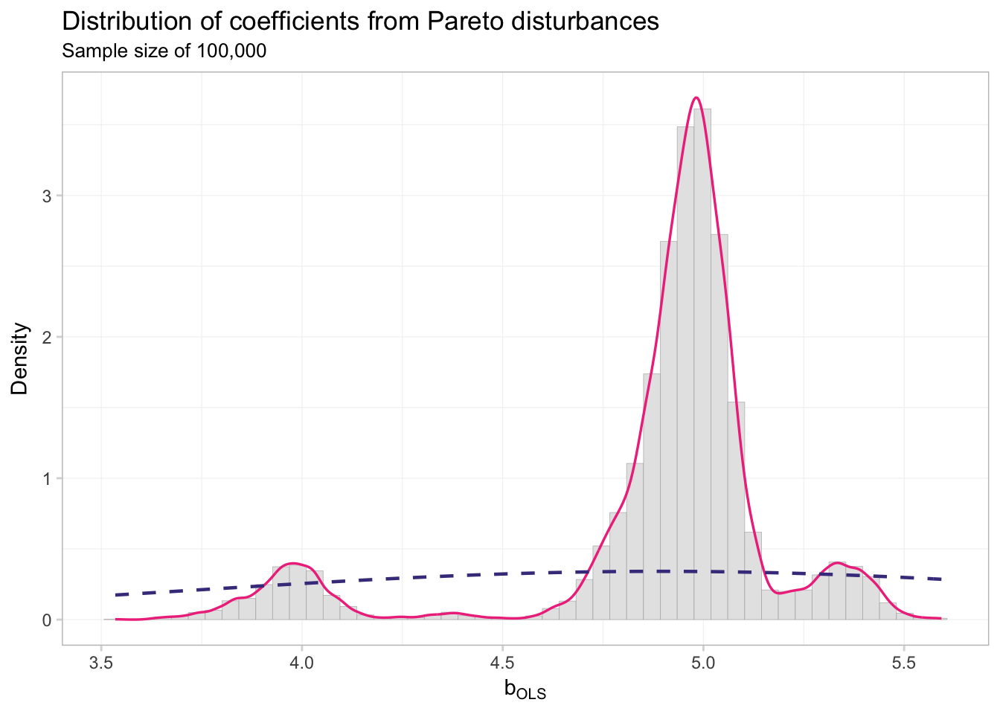

Section 8: OLS in asymptopia
Admin
A helpful function
The between() function (in dplyr) gives you a shortcut to (x >= left) & (x <= right). Its syntax: between(x, left, right), e.g.,
# Define x
x <- 3
# The "normal" way
(x >= 1) & (x <= 5)## [1] TRUE# The "between" way
dplyr::between(x, 1, 5)## [1] TRUELast week
Last week we discussed generalized least squared (GLS) and focused on a special case of GLS: weighted least squares (WLS).
This week
OLS in asymptopia: \(N\) gets (very) big.
What you will need
Packages:
- New! (You probably need to install these packages):
gridExtraarranges multiple plots on a page (vignette)VGAMoffers more named distributions (we’ll used the Pareto)
- Previously used:
dplyr,lfe,readr,magrittr,parallel,lfe,ggplot2,ggthemes,viridis
Asymptopia
Up to this point in the course, we made a set of assumptions and then derived the statistical properties (i.e., mean and variance) of estimators under these assumptions. We wanted our estimators to be unbiased and to have minimum variance (across the class of unbiased (linear) estimators).
Asymptotics provides a different way of thinking about estimators. Rather than asking about the distributional properties of an estimator (essentially asking what would happen if we took an infinite number of samples and estimated our estimator in each sample), we now ask what happens to the estimator as the sample size grows toward infinity (\(N\rightarrow\inf\)). Specifically, we really want to know if the estimator becomes indistinguishable from the parameter as \(N\) approaches infinity. We will be really happy if the estimator approaches the parameter quickly. And we will want to know the distribution of the estimator in asymptopia (e.g., asymptotic normality).
New assumptions
We also relax a bunch of assumptions, either dropping them (e.g., we no longer assume the error term is normally distributed) or replacing them with less restrictive assumption (e.g., we replace strict exogeneity with population orthogonality \(\mathop{\boldsymbol{E}} \left[ \mathbf{x}_i^\prime \varepsilon_i \right] = 0\)).
Thus, our assumptions are:
- Linearity in parameters/disturbance: \(y_i = \mathbf{x}_i^\prime \boldsymbol{\beta} + \varepsilon_i\)
- \(y_i\) and \(\mathbf{x}_i\) are both i.i.d. random variables
- Population orthogonality between \(\mathbf{x}_i\) and \(\varepsilon_i\)
- A (new) rank condition: \(\mathop{r}\left(\mathop{\boldsymbol{E}} \left[ \mathbf{x}_i^\prime \mathbf{x}_i \right]\right) = k\)
We will also assume that the regression includes a constant.
Setting up
Let’s set up.
# Setup ----
# Options
options(stringsAsFactors = F)
options(scipen = 10)
# Packages
library(pacman)
p_load(dplyr, magrittr, parallel,
ggplot2, ggthemes, viridis, grid, gtable, gridExtra)
# Directory
setwd("/Users/edwardarubin/Dropbox/Teaching/ARE212/Section08")
# My ggplot2 theme
theme_ed <- theme(
legend.position = "bottom",
panel.background = element_rect(fill = NA),
panel.border = element_rect(fill = NA, color = "grey75"),
axis.ticks = element_line(color = "grey85"),
panel.grid.major = element_line(color = "grey95", size = 0.2),
panel.grid.minor = element_line(color = "grey95", size = 0.2),
legend.key = element_blank())And load our functions
# Functions ----
# Function to convert tibble, data.frame, or tbl_df to matrix
to_matrix <- function(the_df, vars) {
# Create a matrix from variables in var
new_mat <- the_df %>%
# Select the columns given in 'vars'
select_(.dots = vars) %>%
# Convert to matrix
as.matrix()
# Return 'new_mat'
return(new_mat)
}
# Function for OLS coefficient estimates
b_ols <- function(y, X) {
# Calculate beta hat
beta_hat <- solve(t(X) %*% X) %*% t(X) %*% y
# Return beta_hat
return(beta_hat)
}Recalling results
Today we will confirm one of the crazier results that Max revealed in class: when our assumptions are valid (linearity, population orthogonality, and asymptotic full rank), \(\mathbf{b}\), the OLS estimator of \(\boldsymbol{\beta}\),
- is consistent for \(\boldsymbol{\beta}\)
- is asymptotically normally distributed—with mean \(\boldsymbol{\beta}\) and variance \(\sigma^2 \left( \sum_i^N \mathbf{x}_i^\prime \mathbf{x}_i \right)^{-1}\)
Confirmation by simulation
We are going to use a simulation to confirm this result. Simulation provides statisticians/econometricians with a very powerful way to demonstrate potentially complex results. While simulations may not really prove hypotheses, simulation can help you quickly confirm or disprove suspicions. If the analytical proof is it all complicated, I will generally first write a simulation that demonstrates the idea.
First, let’s use a simulation to “confirm” that OLS is consistent for \(\boldsymbol{\beta}\). Then we will compare the distribution of the OLS estimates for \(\boldsymbol{\beta}\) to their theoretical asymptotic distribution.
Simulation: Consistency of OLS
What will we need for this simulation?
- A big population from which we can draw increasingly large samples.
- A function that draws a sample of \(n\) from the population and estimates \(\mathbf{b}\)
Create the population
Now we create the population. Let’s stick with simple linear regression (the intercept plus one covariate).
- We need a pretty big \(N\) that will allow us to samples that are sufficiently large to get us into asymptopia. I’m going to go with a 100,000.
- Just to make sure normality of \(\mathbf{x}_i\) or of \(\mathbf{\varepsilon}\) is not driving our results, we will generate each variable from a non-normal distribution.
- We will draw \(x_i\) from a uniform distribution on \([0,100]\).
- We will create three different sets of \(\varepsilon_i\) to examine how the distribution of the disturbances affects the asymptotic distribution of \(\mathbf{b}\).
- Standard normal: \(\mathop{N}(0,1)\)
- Uniform on \([-5 ,5]\)
- A Poisson with \(\lambda = 1\) which we then demean by substracting 1
- A strange bimodal Gamma distribution that we will define below
First, we will write a function that generates \(n\) random variables from our bimodal Gamma distribution. This bimodal gamma will essentially flip a coin (Bernoulli) and then, based upon the coin’s outcome, draw a random variable from one of two different Gamma distributions. To simplify things, we will define the default “coin” to be fair (i.e., you have a 50-50 chances of receiving a draw from either distribution).
rbigamma <- function(n, prob = c(0.5, 0.5)) {
# Draw n samples of T or F (our 'coin flip') with replacement
flips <- base::sample(x = c(T, F), size = n,
replace = T, prob = prob)
# Draw n samples from Gamma with shape=5 and scale=1 (mean=7)
# substract the mean (7) from the draws
gamma_7 <- rgamma(n = n, shape = 7, scale = 1)
# Draw n samples from Gamma with shape=1 and scale=1 (mean=1)
# substract the mean (1) from the draws
gamma_1 <- rgamma(n = n, shape = 1, scale = 1)
# Combine the flips and the two gammas' draws
bi_gamma <- flips * gamma_7 + (!flips) * gamma_1
# Demean the bimodal variables (weighting by 'prob')
bi_gamma <- bi_gamma - 7 * prob[1] - 1 * prob[2]
}Let’s check the rbigamma() function (draw 100,000 samples and see what they look like).
# Histogram
set.seed(12345)
qplot(rbigamma(1e5), geom = "histogram")## `stat_bin()` using `bins = 30`. Pick better value with `binwidth`.
# Summary
set.seed(12345)
summary(rbigamma(1e5))## Min. 1st Qu. Median Mean 3rd Qu. Max.
## -3.999992 -3.294732 -0.829443 0.008318 2.696532 19.610945Okay. Now it’s time to actually build the population!
# Set the seed
set.seed(12345)
# Define the population size
N <- 1e5
# Define the true beta
beta <- 5
# Start the population
pop_df <- data.frame(
ones = 1,
x = runif(N, min = 0, max = 100),
e_norm = rnorm(n = N),
e_unif = runif(n = N, min = -5, max = 5),
e_pois = rpois(n = N, lambda = 1) - 1,
e_bg = rbigamma(n = N)
) %>% tbl_df()
# Calculate the outcome variable: y = 1 + beat * x + error
pop_df %<>% mutate(
y_norm = 1 + beta * x + e_norm,
y_unif = 1 + beta * x + e_unif,
y_pois = 1 + beta * x + e_pois,
y_bg = 1 + beta * x + e_bg
)Let’s take a look at the distribution of our various \(\boldsymbol{\varepsilon}\). First, let’s plot them using ggplot2 combined with the arrangeGrob() function form the gridExtra package.
# Generate 4 colors from 'viridis'
c4 <- viridis(n = 4, begin = 0.1, end = 0.8)
# Generate 4 slightly lighter colors from 'viridis'
c4_l <- viridis(n = 4, begin = 0.4, end = 1)
# Make a plot for the normal disturbances
gg_norm <- ggplot(data = pop_df, aes(x = e_norm)) +
geom_histogram(fill = c4[1], color = c4_l[1],
size = 0.1, bins = 30) +
xlab("Normal") +
ylab("Count") +
theme_ed
# Make a plot for the uniform disturbances
gg_unif <- ggplot(data = pop_df, aes(x = e_unif)) +
geom_histogram(fill = c4[2], color = c4_l[2],
size = 0.1, bins = 30) +
xlab("Uniform") +
ylab("Count") +
theme_ed
# Make a plot for the poisson disturbances
gg_pois <- ggplot(data = pop_df, aes(x = e_pois)) +
geom_histogram(fill = c4[3], color = c4_l[3],
size = 0.1, bins = 30) +
xlab("Poisson") +
ylab("Count") +
theme_ed
# Make a plot for the bimodal gamma disturbances
gg_bg <- ggplot(data = pop_df, aes(x = e_bg)) +
geom_histogram(fill = c4[4], color = c4_l[4],
size = 0.1, bins = 30) +
xlab("Bernoulli-Gamma") +
ylab("Count") +
theme_ed
# Combine the plots
gg_errors <- arrangeGrob(gg_norm, gg_unif, gg_pois, gg_bg,
# Two columns
ncol = 2,
# Title on top
top = "Distributions of our disturbances")
# Print the grid the screen
grid.draw(gg_errors)
Looking good! One takeaway: only one of these distributions looks normal—the normal one. Another observation: the Bernoulli-Gamma distribution looks a bit like a dinosaur.
Just to make sure our means are approximately zero, let’s calculate the means. When you have a lot of variables, you can whittle down the variables by combining dplyr’s select() function with its sub-functions like matches(), starts_with(), contains(), one_of() and ends_with().
pop_df %>% select(starts_with("e_")) %>% summarize_each(funs = "mean")## `summarise_each()` is deprecated.
## Use `summarise_all()`, `summarise_at()` or `summarise_if()` instead.
## To map `funs` over all variables, use `summarise_all()`## # A tibble: 1 x 4
## e_norm e_unif e_pois e_bg
## <dbl> <dbl> <dbl> <dbl>
## 1 -0.0001166984 -0.006406174 0.00203 0.00278964Works for me!
Now let’s move on to writing the functions for our simulation.
Single-iteration function
Our function for this simulation needs to accomplish two tasks:
- Draw a sample of size
nfrom population. - Calculate \(\mathbf{b}\) for the sample (and return the slope coefficient).
one_iter <- function(n, data) {
# Draw 'n' observations from 'data'
tmp_df <- sample_n(tbl = data, size = n)
# Define the X matrix (same across regressions)
x_mat <- to_matrix(tmp_df, c("ones", "x"))
# Estimate OLS for each 'y'
b_norm = b_ols(
y = to_matrix(tmp_df, "y_norm"),
X = x_mat)[2]
b_unif = b_ols(
y = to_matrix(tmp_df, "y_unif"),
X = x_mat)[2]
b_pois = b_ols(
y = to_matrix(tmp_df, "y_pois"),
X = x_mat)[2]
b_bg = b_ols(
y = to_matrix(tmp_df, "y_bg"),
X = x_mat)[2]
# Create a data.frame to return
coef_df <- data.frame(
# The estimates
est = c(b_norm, b_unif, b_pois, b_bg),
# The distributions
dist = c("normal", "uniform", "poisson", "bi-gamma"),
# The sample size
n = n
)
# Return coef_df
return(coef_df)
}Note on efficiency: You want to avoid doing the same thing many times. For examples, my original function repeated X = to_matrix(tmp_df, c("ones", "x")) inside of each call to b_ols(). The new function only calls the command to_matrix(tmp_df, c("ones", "x")) once. When you are going to run a function 40,000 times, little inefficiencies can add up quickly: we just reduced the number of times R calculates to_matrix(tmp_df, c("ones", "x")) from 160,000 to 40,000. Pretty good.
Simulation function
We now have a function (one_iter()) that runs a single iteration for the simulation for a given sample size (n) and a given dataset (data). Now, we will write a function (run_sim()) that runs one_iter() a specified number of times (n_iter) for a given sample size (still n) and a given dataset (still data). We will accomplish all of these tasks with a simple call to mclapply(), the Linux- and Mac-friendly parallelized version of lapply().
If you do not want to run this function in parallel, then set the n_cores argument equal to one when you run the function (or in the function definition), i.e., n_cores = 1. Windows users: This function should still still work for you, but it will not be in parallel. If you want to run it in parallel, you can change the function to use parLapply(), as we did in the previous section. Apologies for using a function you cannot use; I wanted to share the alternate method for parallelization.
Note the use of rep() below; rep() is a very useful function.
run_sim <- function(n, n_iter, data, n_cores = 4) {
# Required packages
require(dplyr)
require(parallel)
require(magrittr)
# Run 'one_iter' 'n_iter' times with sample size 'n'
run_df <- mclapply(
X = rep(n, n_iter),
FUN = one_iter,
data = data,
mc.cores = n_cores) %>% bind_rows() %>% tbl_df()
# Return run_df
return(run_df)
}Samples sizes
We are nearly ready to run the simulation, but before we do, we need to decide our sample size(s) and number of iterations.
- We are going to take 10,000 samples for each sample size
- We are going to use sample sizes of 25, 100, 1,000, and 10,000.
We could call the run_sim() function for each sample size, e.g.,
# Set the seed (again)
set.seed(12345)
# Run the simulation with n = 25
sim_25 <- run_sim(
n = 25,
n_iter = 1e4,
data = select(pop_df, -starts_with("e")))
# Run the simulation with n = 100
sim_100 <- run_sim(
n = 100,
n_iter = 1e4,
data = select(pop_df, -starts_with("e")))
# Run the simulation with n = 1,000
sim_1k <- run_sim(
n = 1e3,
n_iter = 1e4,
data = select(pop_df, -starts_with("e")))
# Run the simulation with n = 10,000
sim_10k <- run_sim(
n = 1e4,
n_iter = 1e4,
data = select(pop_df, -starts_with("e")))
# Combine simulations
sim_df <- bind_rows(sim_25, sim_100, sim_1k, sim_10k)
# Clean up
rm(sim_25, sim_100, sim_1k, sim_10k); gc()But we are not going to run it that way—we want to be a bit more efficient. It might not be a bit deal here, but what if you wanted to run the simulation for 1,000 different sample sizes? You probably would not want to repeat what we just did above 1,000 times. We can instead modify a single line of the run_sim() function: change rep(n, n_iter) to rep(n, each = n_iter).1 Note that this method forces you to run all sample sizes with the same number of iterations (if you do not want this behavior, you need to use a different function from rep(). mapply() combined with rep() would work, e.g., mapply(FUN = rep, 1:3, 4:6).).
To see what we are doing, compare
rep(c(10, 25, 1000, 10000), 3)## [1] 10 25 1000 10000 10 25 1000 10000 10 25 1000
## [12] 10000to
rep(c(10, 25, 1000, 10000), each = 3)## [1] 10 10 10 25 25 25 1000 1000 1000 10000 10000
## [12] 10000Okay. Let’s update the run_sim() function, as discussed above
run_sim <- function(n, n_iter, data, n_cores = 4) {
# Required packages
require(dplyr)
require(parallel)
require(magrittr)
# Run 'one_iter' 'n_iter' times with sample size 'n'
run_df <- mclapply(
X = rep(n, each = n_iter),
FUN = one_iter,
data = data,
mc.cores = n_cores) %>% bind_rows() %>% tbl_df()
# Return run_df
return(run_df)
}Run the simulation
We are (finally) ready to run the simulation. So let’s get on with it!
Beware! This simulation takes some time to run: for each of the four sample sizes, we are applying one_iter() 10,000 times—resulting in 40,000 runs of one_iter(). And… for each of these 40,000 iterations, one_iter() samples from pop_df and calculates four coefficients (one for each of the distributions we used to generate the disturbances). Thus, in the end, we run 160,000 regressions. You can tell the simulation to use fewer iterations by changing n_iter. In addition, to make our code a bit more efficient (less computationally intensive), I use select() to grab only the variables we want in the data argument—we do not need the disturbances to run our regressions.
# Set the seed (again)
set.seed(12345)
# Define our desired sample sizes
sizes <- c(25, 100, 1e3, 1e4)
# Run the simulation function 'run_sim()'
sim_df <- run_sim(n = sizes, n_iter = 1e4,
data = select(pop_df, -starts_with("e")))Plot results
Now that we have the data from our simulation, let’s plot our results. Specifically, we will plot the distribution of coefficient estimates, by sample size, for each of the distributions of the disturbances.
Let’s start with a single distribution—the simulations resulting from the normally distributed disturbances (dist or "normal" in our simulation dataset). We use our old friend filter() to grab the results from the normal disturbances. In addition, we will use the stat = density argument to geom_line() to draw lines for the densities of the distributions of the coefficient estimates. Finally, we will use as.character(n) for the fill to get different fill colors for the various sample sizes.
ggplot(data = filter(sim_df, dist == "normal"),
aes(x = est, fill = as.character(n))) +
geom_density(stat = "density", alpha = 0.6, size = 0.05) +
xlab(expression(b[OLS])) +
ylab("Density") +
ggtitle(paste("Distribution of OLS coefficients",
"with normal disturbances")) +
scale_fill_viridis("Sample size:", discrete = T,
direction = -1) +
theme_ed
Everything is looking good except for the order of the labels in the legend. What’s going on here? Because fed our sample sizes n to ggplot() as characters, R alphabetizes the levels when it creates the legend. For example,
# Numeric:
100 < 23## [1] FALSE# Characters:
"100" < "23"## [1] TRUEWhile I tend to avoid using the factor class of objects, we’ve reached a case where factors will be very helpful. Specifically, factors will be useful in this task because they allow us to define both the levels and the labels of a variable. Let’s add a column to our simulation dataset, in which we copy the existing n column and convert it to a factor.
The factor() function wants
x, the vector that we want to convert to factorlevels, the values ofxlabels, the names we want to use for the values ofxordered, logical for whether the values ofxare ordered
We will also use a new function prettyNum() here that formats numbers. We will use it to add commas to numbers—you should really only do this for printing numbers/labels, which is why we are doing it now.
For example,
prettyNum(1e4, big.mark=",", scientific = F)## [1] "10,000"Okay, so let’s create this factor-version of n in sim_df
# Add a factor version of 'n'
sim_df %<>% mutate(
n_fac = factor(
x = n,
levels = sizes,
labels = prettyNum(sizes, big.mark=",", scientific = F),
ordered = T)
)
# Check our new variable
sim_df$n_fac %>% head()## [1] 25 25 25 25 25 25
## Levels: 25 < 100 < 1,000 < 10,000sim_df$n_fac %>% tail()## [1] 10,000 10,000 10,000 10,000 10,000 10,000
## Levels: 25 < 100 < 1,000 < 10,000Now we make the plot again…
ggplot(data = filter(sim_df, dist == "normal"),
aes(x = est, fill = n_fac)) +
geom_density(stat = "density", alpha = 0.6, size = 0.05) +
xlab(expression(b[OLS])) +
ylab("Density") +
ggtitle(paste("Distribution of OLS coefficients",
"with normal disturbances")) +
scale_fill_viridis("Sample size:", discrete = T,
direction = -1) +
theme_ed
Much better.
So what do we see here? Evidence of \(\mathbf{b}_\text{OLS}\) converging to to the true parameter! In other words: OLS appears to be consistent… at least when the disturbances are normal.
We want to know whether OLS is consistent when the disturbances are not normal, since we no longer assume the disturbances are normal. So let’s repeat this plot for each of the four distributions that generated the disturbances.
Because factors really are pretty helpful with plots, let’s create another factor variable—this time it will be for our distribution variable dist.
sim_df %<>% mutate(dist_fac = factor(
x = dist,
levels = c("bi-gamma", "normal", "poisson", "uniform"),
labels = c("Bernoulli-Gamma", "Normal", "Poisson", "Uniform")
))Now we plot. To create the previous plot for each distribution, we just need to change two things:
- Use the full
sim_df(remove thefilter()) - Add
facet_grid(), which will create multiple plots based upon one or more variables. Specifically, we will usefacet_grid(dist_fac ~ .), which tellsggplot2to create a new plot (row) for each value ofdist_fac. We will also specifyscales = "free_y"to let the y-axis vary from plot to plot.
ggplot(data = sim_df,
aes(x = est, fill = n_fac)) +
geom_density(stat = "density", alpha = 0.6, size = 0.05) +
xlab(expression(b[OLS])) +
ylab("Density") +
ggtitle(paste("Distribution of OLS coefficients",
"with normal disturbances")) +
scale_fill_viridis("Sample size:", discrete = T,
direction = -1) +
facet_grid(dist_fac ~ ., scales = "free_y") +
theme_ed
Keeping in mind that we’ve allowed the y-axis to vary, what do these graphs tell us? First, it appears as though OLS is consistent in estimating the true parameter regardless of the distribution of the disturbances: as \(N\) (sample size) approaches infinity in each of the plots, the distribution of the coefficients tightens around the true parameter value (5).
Great!
If you are more interested in numbers than pictures:
sim_df %>% group_by(dist_fac, n_fac) %>%
summarize(mean = mean(est), std_dev = sd(est)) %>%
knitr::kable(digits = 4,
col.names = c("Distribution", "N", "Mean", "Std. Dev."))| Distribution | N | Mean | Std. Dev. |
|---|---|---|---|
| Bernoulli-Gamma | 25 | 5.0003 | 0.0260 |
| Bernoulli-Gamma | 100 | 5.0002 | 0.0125 |
| Bernoulli-Gamma | 1,000 | 5.0001 | 0.0039 |
| Bernoulli-Gamma | 10,000 | 5.0002 | 0.0012 |
| Normal | 25 | 5.0002 | 0.0073 |
| Normal | 100 | 5.0001 | 0.0035 |
| Normal | 1,000 | 5.0001 | 0.0011 |
| Normal | 10,000 | 5.0001 | 0.0003 |
| Poisson | 25 | 4.9999 | 0.0072 |
| Poisson | 100 | 4.9999 | 0.0035 |
| Poisson | 1,000 | 4.9999 | 0.0011 |
| Poisson | 10,000 | 4.9999 | 0.0003 |
| Uniform | 25 | 4.9999 | 0.0209 |
| Uniform | 100 | 4.9999 | 0.0101 |
| Uniform | 1,000 | 4.9998 | 0.0031 |
| Uniform | 10,000 | 4.9999 | 0.0010 |
Again, we see that for each distribution, as \(N\) increases, the standard deviation of the coefficient estimates diminishes.
Simulation: Asymptotic distribution
The second remarkable aspect of OLS’s asymptotics is the convergence in distribution of \(\mathbf{b}\) to a normally distributed random variable. Let’s check this feature too.
For this task, we will only look at the largest sample size from our simulation—10,000—since we need the asymptotics to kick in.
Our “check” of the asymptotic distribution will involve 1. Plot the histograms of coefficient estimates for each of the disurbance-generating distributions 2. Plot a smoothed density over the histograms (sort of superfluous to step 1) 3. Plot the normal density function over the histograms—with mean \(\boldsymbol{\beta}\) and variance \(\sigma^2 \left( \sum_i^N \mathbf{x}_i^\prime \mathbf{x}_i \right)^{-1}\)
We are going to cheat a little bit and grab the standard deviation from our coefficient estimates, rather than calculating it analytically.2 Let’s do this step now.
# Summaries of our point estimates
est_df <- sim_df %>%
filter(n == 1e4) %>%
group_by(dist) %>%
summarize(mean_est = mean(est), sd_est = sd(est))Now for the plot. We will again make use of filter() to grab the coefficient estimates for only the 10,000-obseration samples. We will (again) make four plots and plot them together using arrangeGrob() and grid.draw().
Make the four individual plots:
# Normal disturbances
sim_norm <- ggplot(aes(x = est),
data = filter(sim_df, dist == "normal", n == 1e4)) +
geom_histogram(aes(y = ..density..),
fill = "grey90", color = "grey65",
size = 0.1, bins = 50) +
geom_line(stat = "density",
color = "violetred2", size = 0.6) +
stat_function(
geom = "line", fun = dnorm,
color = "slateblue4", linetype = "dashed", size = 0.8,
args = list(
mean = filter(est_df, dist == "normal")$mean_est,
sd = filter(est_df, dist == "normal")$sd_est)
) +
ggtitle("Normal") +
xlab("") + ylab("") +
theme_ed
# Uniform disturbances
sim_unif <- ggplot(aes(x = est),
data = filter(sim_df, dist == "uniform", n == 1e4)) +
geom_histogram(aes(y = ..density..),
fill = "grey90", color = "grey65",
size = 0.1, bins = 50) +
geom_line(stat = "density",
color = "violetred2", size = 0.6) +
stat_function(
geom = "line", fun = dnorm,
color = "slateblue4", linetype = "dashed", size = 0.8,
args = list(
mean = filter(est_df, dist == "uniform")$mean_est,
sd = filter(est_df, dist == "uniform")$sd_est)
) +
ggtitle("Uniform") +
xlab("") + ylab("") +
theme_ed
# Uniform disturbances
sim_pois <- ggplot(aes(x = est),
data = filter(sim_df, dist == "poisson", n == 1e4)) +
geom_histogram(aes(y = ..density..),
fill = "grey90", color = "grey65",
size = 0.1, bins = 50) +
geom_line(stat = "density",
color = "violetred2", size = 0.6) +
stat_function(
geom = "line", fun = dnorm,
color = "slateblue4", linetype = "dashed", size = 0.8,
args = list(
mean = filter(est_df, dist == "poisson")$mean_est,
sd = filter(est_df, dist == "poisson")$sd_est)
) +
ggtitle("Poisson") +
xlab("") + ylab("") +
theme_ed
# Uniform disturbances
sim_bg <- ggplot(aes(x = est),
data = filter(sim_df, dist == "bi-gamma", n == 1e4)) +
geom_histogram(aes(y = ..density..),
fill = "grey90", color = "grey65",
size = 0.1, bins = 50) +
geom_line(stat = "density",
color = "violetred2", size = 0.6) +
stat_function(
geom = "line", fun = dnorm,
color = "slateblue4", linetype = "dashed", size = 0.8,
args = list(
mean = filter(est_df, dist == "bi-gamma")$mean_est,
sd = filter(est_df, dist == "bi-gamma")$sd_est)
) +
ggtitle("Bernoulli-Gamma") +
xlab("") + ylab("") +
theme_edArrange the plots together:
# 'Join' the plots
gg_sim <- arrangeGrob(
sim_norm, sim_unif, sim_pois, sim_bg,
# Two columns
ncol = 2,
# Title on top
top = textGrob(expression(paste(
"Asymptotic distributions of ", b[OLS])),
gp = gpar(fontsize = 16, font = 3), check = T),
left = textGrob("Density", vjust = 2, rot = 90),
bottom = textGrob(expression(b[OLS]), vjust = -1)
)
# Print the grid the screen
grid.draw(gg_sim)
I’d say the distributions look pretty normal. But if you want a more rigorous test than Ed’s histogram-based opinion, you have a few options, e.g., the Kolmogorov-Smirnov test and the Shapiro-Wilk test. R has built-in functions for these tests (shapiro.test() and ks.test()), and since we are not officially covering these tests in ARE 212, we’ll use the canned versions of the function.
The Shapiro-Wilk test function will accept up to 5,000 estimates, so we will randomly sample 5,000 of our coefficient estimates from the Poisson-generated sample (with a sample size of 10,000)
# Set the seed
set.seed(12345)
# The Shapiro-Wilk test
sim_df %>%
# Subset for Poisson and n = 10,000
filter(dist == "poisson", n == 1e4) %>%
# Sample 5,000 of the rows
sample_n(size = 5e3) %$%
# Grab the variable 'est'
est %>%
# The actual Shaprio-Wilk test function
shapiro.test()##
## Shapiro-Wilk normality test
##
## data: .
## W = 0.99969, p-value = 0.6792We can use our full sample for the Kolmogorov-Smirnov test function, but we need to give it a mean and variance for the normal distribution against which we are testing our data (as we did above in the plots).
ks.test(
x = filter(sim_df, dist == "poisson", n == 1e4)$est,
y = "pnorm",
mean = filter(est_df, dist == "poisson")$mean_est,
sd = filter(est_df, dist == "poisson")$sd_est)##
## One-sample Kolmogorov-Smirnov test
##
## data: filter(sim_df, dist == "poisson", n == 10000)$est
## D = 0.0067788, p-value = 0.7477
## alternative hypothesis: two-sidedBoth tests fail to reject the null hypothesis that our data are normally distributed.
Are we in asymptopia?
Finally, let’s repeat our simulation with disturbances that are less well behaved. Enter the Pareto distribution. The Pareto distribution offers the unique feature of having infinite variance for certain parameter values.
Why do we care about infinite variance? We care because the Lindeberg-Levy Central Limit Theorem (CLT) requires finite variance. And why do we care about what the Lindeberg-Levy CLT requires? We care about what the Lindeberg-Levy CLT requires because we use it to prove the asymptotic normality of \(\mathbf{b}\). Specifically, we use the Lindeberg-Levy CLT to to prove the asymptotic distribution of \(\mathbf{x}_i^\prime \varepsilon_i\), which requires finite variance of \(\mathbf{x}_i^\prime \varepsilon_i\). In short: when we allow \(\varepsilon_i\) to have infinite variance, we lose the Lindeberg-Levy CLT and asymptotic normality of \(\mathbf{b}\).
We will now use the VGAM package for its rpareto() function. If we set its parameters scale = 2 and shape = 1, then the variance of our variable is infinite. See it in action with 10 million draws:
p_load(VGAM)
rpareto(n = 1e7, scale = 2, shape = 1) %>% var()## [1] 15345753Big variance!
# Load the VGAM package
p_load(VGAM)
# Set the seed
set.seed(12345)
# Define the population size
N_par <- 1e6
# Create a population
par_df <- data.frame(
e = rpareto(N_par, scale = 2, shape = 1))
# Demean our disturbances
par_df %<>% mutate(e = e - mean(e))
# Add x and ones
par_df %<>% mutate(
ones = 1,
x = runif(N_par, 0, 100),
y = 1 + 5 * x + e
) %>% tbl_df()Let’s check the percentiles of our Pareto-distributed disturbances
quantile(par_df$e, probs = seq(0, 1, 0.1))## 0% 10% 20% 30% 40%
## -27.551417 -27.330677 -27.051920 -26.694963 -26.220252
## 50% 60% 70% 80% 90%
## -25.551901 -24.551344 -22.869922 -19.531406 -9.511747
## 100%
## 2701207.741665Pretty crazy stuff.
Define new simulation functions:
one_par <- function(n, data) {
# Draw 'n' observations from 'data'
tmp_df <- sample_n(tbl = data, size = n)
# Estimate OLS
b_par = b_ols(
y = to_matrix(tmp_df, "y"),
X = to_matrix(tmp_df, c("ones", "x")))[2]
# Create a data.frame to return
coef_df <- data.frame(
# The estimates
est = b_par,
# The sample size
n = n
)
# Return coef_df
return(coef_df)
}run_par <- function(n, n_iter, data, n_cores = 4) {
# Required packages
require(dplyr)
require(parallel)
require(magrittr)
# Run 'one_par' 'n_iter' times with sample size 'n'
run_df <- mclapply(
X = rep(n, each = n_iter),
FUN = one_par,
data = data,
mc.cores = n_cores) %>% bind_rows() %>% tbl_df()
# Return run_df
return(run_df)
}Now let’s run the simulation 10,000 times with sample sizes of 10,000.
par_10k <- run_par(
n = 1e4,
n_iter = 1e4,
data = par_df)What does the distribution of parameters from this simulation look like?
# Pareto disturbances
ggplot(data = par_10k, aes(x = est)) +
geom_histogram(aes(y = ..density..),
fill = "grey90", color = "grey65",
size = 0.1, bins = 50) +
geom_line(stat = "density",
color = "violetred2", size = 0.6) +
stat_function(
geom = "line", fun = dnorm,
color = "slateblue4", linetype = "dashed", size = 0.8,
args = list(
mean = mean(par_10k$est),
sd = sd(par_10k$est))
) +
ggtitle("Distribution of coefficients from Pareto disturbances",
subtitle = "Sample size of 10,000") +
xlab(expression(b[OLS])) +
ylab("Density") +
theme_ed
This distribution does not look very close to normal.
ks.test(
x = par_10k$est,
y = "pnorm",
mean = mean(par_10k$est),
sd = sd(par_10k$est))##
## One-sample Kolmogorov-Smirnov test
##
## data: par_10k$est
## D = 0.31667, p-value < 2.2e-16
## alternative hypothesis: two-sidedKolmogorov and Smirnov agree: not normal.
Just to make sure we cannot solve the problem with more data, let’s try sample sizes of 100,000.
par_100k <- run_par(
n = 1e5,
n_iter = 1e4,
data = par_df)What does the distribution of coefficients look like now?
# Pareto disturbances
ggplot(data = par_100k, aes(x = est)) +
geom_histogram(aes(y = ..density..),
fill = "grey90", color = "grey65",
size = 0.1, bins = 50) +
geom_line(stat = "density",
color = "violetred2", size = 0.6) +
stat_function(
geom = "line", fun = dnorm,
color = "slateblue4", linetype = "dashed", size = 0.8,
args = list(
mean = mean(par_100k$est),
sd = sd(par_10k$est))
) +
ggtitle("Distribution of coefficients from Pareto disturbances",
subtitle = "Sample size of 100,000") +
xlab(expression(b[OLS])) +
ylab("Density") +
theme_ed
ks.test(
x = par_100k$est,
y = "pnorm",
mean = mean(par_100k$est),
sd = sd(par_100k$est))##
## One-sample Kolmogorov-Smirnov test
##
## data: par_100k$est
## D = 0.23409, p-value < 2.2e-16
## alternative hypothesis: two-sidedNot so normal, my friends. The takeaway? Assumptions matter: we need finite variance to get asymptotic normality.
Fun tools: Fira Code
Fira Code is a “monospaced font with programming ligatures”. As you probably know, most programming is done in a monospaced font. However, some character combinations look a bit weird in monospaced fonts, e.g., R’s famous <-, or <=, or != (and some combinations look a bit strange in regardless of monospacing). Ligatures attempt to correct for some of this strangeness by connecting the characters a bit. I find it makes spending my entire life staring at a monospaced screen a bit more enjoyable.
Here’s a side-by-side comparison.
 Ligatures!
Ligatures!
Data-cleaning resources
A few people asked me about data cleaning in R. First off—in my opinion—R is fantastic for cleaning data. Here are a few of my favorite packages:
data.table: particularly good with large datasets. Similar todplyrbut with a different syntax. (website)stringr: quick and relatively straightforward string (character) manipulation. (vignette)lubridate: for dates (vignette)
I’ve also heard good things about tidyr for reshaping, which is part of the tidyverse.
The folks at RStudio also provide a bunch of cheatsheets for things ranging from importing data to data visualization data wrangling to R Markdown to regular expressions.
Last, UC Berkeley’s D-Lab has a lot of resources, including training sessions and experts who will meet with you and answer your questions. I’ll try to cover as much as I can in our approximately 50 weekly minutes in section, but in case you need more, D-Lab is a great place to start.
D-Lab
- Training schedule, including upcoming sessions in data wrangling, machine learing, and
ggplot2 - Other services